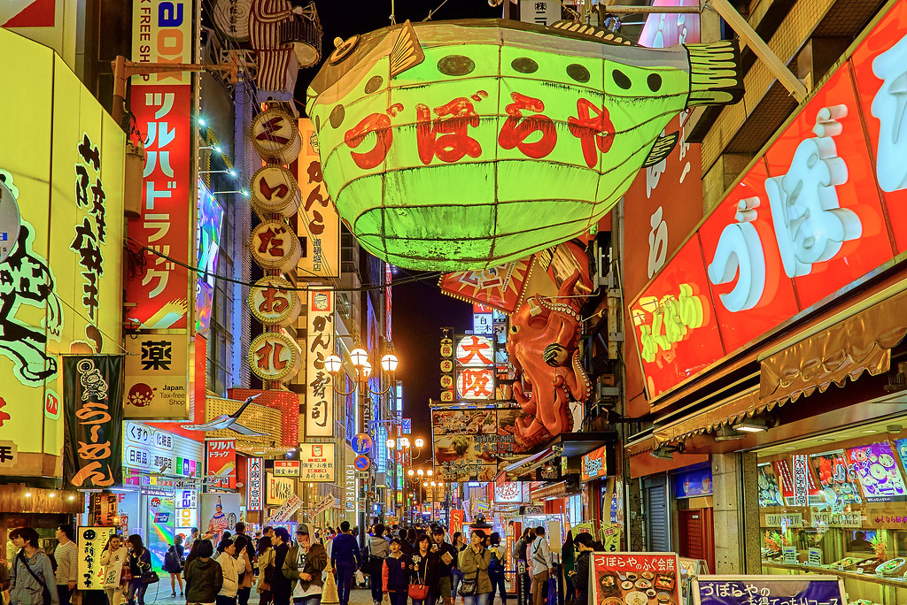

From Tokyo to Kyoto, Hokkaido to Okinawa, and everywhere in between, let us help you explore Japan in a truly personal, meaningful way. Here's how it works:
Discovering Your Vision
When it comes to your Japan itinerary, everything is designed around you, just for you. So the first step is to learn
about you and what you're looking for in this trip.
To give you personalized insights, we begin by listening and learning about your interests, priorities, and personal
travel style. What do you look for in accommodations? What types of experiences do you seek out? Do you love travel by
public transportation, or prefer private drivers all the way?
Throughout the process, we constantly share insights. Has one of the destinations you're interested in become touristy?
Is there a special local cuisine you must try? Is there a hidden gem you didn't know about? To offer the most fulfilling
trip possible, we'll make sure you're aware of special places and experiences you may not have considered.
Designing Your Adventure
Then we begin designing your perfect Japan itinerary piece by piece, taking your feedback into account along the way.
Everyone's adventure is unique, we don't recycle itineraries. Your entire Japan trip — from the destinations to
accommodations, room types, unique private experiences, transport choices, and more — is hand crafted completely for you.
Preparing for Your Trip
As soon as you've approved the Japan itinerary we've designed for you, it's time to book your trip and begin preparing for
your adventure. We'll handle the behind-the-scenes process of coordinating all the details of your itinerary, so you can just
relax, and begin daydreaming about your coming grand adventure!
In the meantime, your Adventure Guide will help guide you in preparing for your trip, providing you with essential
pre-departure information and answering any questions you may have.
Your Japan Adventure Begins
A few days before departure you'll receive your final itinerary, packed with essential information for your time in Japan.
Then it's finally time for your long-awaited adventure!
From start to finish, we're here to make everything as enjoyable and effortless as possible. Additionally, with 24/7
emergency assistance during your trip, you can simply relax and enjoy the adventure.